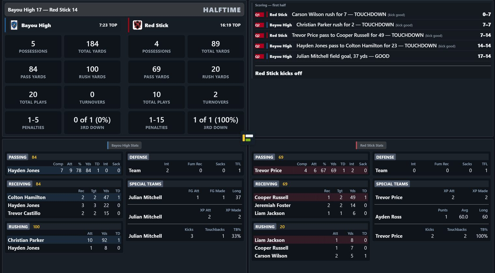
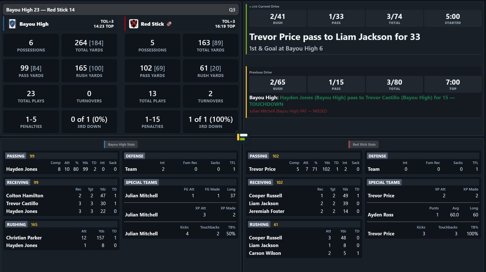

StatChat — how to use it
Live high-school football stat tracking. Built for one person entering plays from the sideline or the press box.
1. Before the first game
The sample game
Every new school starts with one game already on its dashboard, called SAMPLE. It is there so your first screen is not empty: it has a real half of football in it, so every report has something to show and every button has something to do.
Both teams in it are invented. It is not your school playing anybody, and nothing in it is a record of anything — it exists to be practised on.
It opens at halftime. The most useful thing you can do with it is finish it: start the second half, run a drive or two, mark the quarter, then end the game. That takes you through the guided kickoff, ordinary play entry, the clock and the ball spot, and it leaves you with a finished game whose recap, score summary and stat package you can read. Those three only appear once a game is final, which is why finishing it is worth the ten minutes.
Accounts and roles
Everyone signs in with an email and password. There are three roles:
| Role | Can do |
|---|---|
| Admin | Everything — create games, edit rosters, delete plays, reopen a finished game. |
| Scorer | Enter plays and run games. Cannot delete games or change roles. |
| View | Watch the live view and read reports. |
Your team roster
From the dashboard, open Team Roster. This is your own squad and carries over from game to game. For each player enter a jersey number, a name, and a position.
RB/LB or WR, DB and both are read — but only the first position decides which picker he appears in. See Positions, and what the app does with them below.Uploading a roster from a spreadsheet
Both Team Roster and the opponent roster on New Game take an .xlsx or .xls file. Pressing the upload button shows a picture of the layout before it asks for the file: column A is the jersey number, column B the name, column C the position. A header row is ignored, and a player with no position is fine — he is offered in the broad pickers and kept out of the narrow ones (passer, kicker, punter) until he actually plays the role or you seed him there.
What is read, and what is ignored
Only the first sheet of the workbook is read. Any other tab is
ignored completely, so a file with Varsity and JV as
separate tabs imports whichever one is first and gives no sign the other exists.
| Column | What it must hold |
|---|---|
| A | The jersey number, and digits only. |
| B | The name. Anything at all counts. |
| C | The position. Optional. |
| D onward | Ignored. Height, weight, class year and notes can stay in the file. |
A row is read only when column A is digits and column B is not empty. Everything
else is passed over: the header row, blank lines, a school name across the top, a
Coaches block at the bottom.
#4 is skipped. 12A is skipped. 4 (C) for a captain
is skipped. These are the commonest reason an import comes up short, and because the
rows are simply passed over like a header row, the only clue is that the count in the
preview is lower than the squad. Read the number in the preview before you
confirm — if it is short, look for a # in column A.0012
imports as jersey 0012, not 12, and will not match
12 typed during a game. Format the column as plain numbers, not text, if a
spreadsheet has padded them.Positions, and what the app does with them
The position is read as an abbreviation, upper or lower case.
Wide Receiver spelled out is not understood — it reads as
WIDE, which is not a position the app knows.
| Unit | Abbreviations the app knows |
|---|---|
| Offense | QB RB FB HB TB WR SE FL SLOT SB TE OL OT OG G T C ATH ATHLETE |
| Defense | DB CB S FS SS LB OLB ILB MLB WLB DE DT NG NT EDGE DL |
| Special teams | K P LS DS H KR PR RET ST |
RB/LB files a player under offense;
LB/RB files the same player under defense. Put the side
of the ball he plays most first.A position the app does not know, and a position left blank, are treated the same way and neither stops the import. The player is still on the roster and his number still works during a game; he is simply not filed under a unit yet, so he appears in the broad pickers and not the narrow ones. The game setup page lists these under needs assignment with a tag to apply.
(O), (D) or (ST) puts that player on offense,
defense or special teams whatever column C says, and the tag is stripped from the
stored name. Macario Dade Jr (D) becomes Macario Dade Jr on
defense. Case does not matter; any other tag is left alone as part of the name.Two players wearing the same number
This is treated as a fact about the team rather than a mistake, and nothing is merged or dropped. Both players are imported and kept.
- One on offense, one on defense. Nothing to decide. Each appears in his own unit's pickers.
- Both on the same side of the ball. Both are kept, and the game asks which one on each play where it matters. The setup page counts these for you before you start so it is not a surprise on a Friday night.
- Both with positions the app does not recognize. This is the one case that needs a hand: there is nowhere to file either of them, so the setup page asks you to tag them.
- The same name twice on one number is flagged as one player entered twice, with the suggestion to delete the extra row.
Uploading the same file again
Re-uploading is safe and is the normal way to add players who arrived late. Anyone already on this season's roster is skipped, and the preview says how many before you confirm.
- Names are matched ignoring case and surrounding spaces, so
MACARIO DADE JRandMacario Dade Jrare the same player. - A different spelling is a different player.
Mac DadeandMacario Dade Jrboth import. - Two identical names in the same file are both added — the check is against the roster, not within the sheet.
- Matching is scoped to the season and to your team, so last year's squad never blocks this year's.
Your roster and an opponent roster behave differently
The same file can succeed in one place and be refused in the other, and it is worth knowing which is which before a game night.
| Team Roster | Opponent roster on New Game | |
|---|---|---|
| A row it cannot read | Skipped quietly. The rest imports. | The whole file is refused and every bad row is listed with the reason. |
| An unknown position | Imported; the player needs a unit tag later. | Refused, naming the position it did not recognize. |
| Number and name swapped | Nothing imports, and it does say so: “No valid rows found. Expected column A = number, column B = name, column C = position.” | Refused, saying column B looks like a number. |
| A compound position | Stored whole, e.g. RB/LB, and reduced when the game is built. |
Reduced to RB at import. |
Rosters are kept per season
A Season picker sits at the top of the roster page. The current season is the only one you can change — add, edit, remove, upload, or clear. Pick an earlier season from the dropdown and everything on it becomes read-only: no controls at all, just the squad exactly as it was, kept for reference.
A game always uses the roster from its own season — reopening an old game to fix an unrelated detail pulls up that game's own historical squad, never whatever is loaded as current today.
Your team's look
Customize team sets your logo and colours. These appear on the banner, the live view and every report.
What makes a good logo file
The line under Choose file says it in five words — square, PNG, transparent background works best — and the same line sits under the opponent's logo on the game setup page. All three parts matter, and for the same reason: this one file gets drawn in a lot of places you are not looking at when you upload it.
| Why | What happens otherwise |
|---|---|
| Square | The dashboard chip, the loading icon, the crew-view team header and the printed recap all draw the logo in a square slot. A wide banner-shaped file is letterboxed into it and comes out small; a tall one is cropped. |
| PNG | It is the only one of the accepted formats that carries transparency and stays sharp at small sizes. A JPEG cannot be transparent at all, and shows compression fringing around a crest's edges at chip size. |
| Transparent background | The app is dark and the printed reports are white, and the broadcast overlays are neither. A logo with a white box baked into it shows that box on every dark surface, and a logo with a dark box shows it on paper. |
A crest that is genuinely dark artwork on a transparent background is a special case: the app puts a white plate behind those in a few places rather than letting them disappear into a dark card. That is a rescue, not the intended look — a logo that reads on both is better than one that needs the plate.
2. Setting up a game
Dashboard → + New game.
- Name and opponent. Give the game a designator you will recognise later — it is what you type to confirm a delete or reset.
- Opponent roster. Upload an
.xlsxif you have one, or choose Skip roster and type numbers by hand during the game. A programme with just names and numbers is worth entering; positions are optional. - Likely starters. Fill in QB, RB1, RB2, WR1, WR2, WR3 for the opponent if you know them.
- Opponent branding. Logo and colours, so the banner and reports look right. Same guidance as your own logo — square, PNG, transparent background — and for the same reason: the opponent crest is drawn in the same square slots by the same code. See What makes a good logo file above.
Players you type in by hand during the game are added to the picker from then on, so a number never has to be typed twice.
Specify all game starters — for the broadcast only
Below the likely starters is a collapsed section marked BROADCAST ONLY. It holds your full starting lineups — eleven on offense, eleven on defense, four on special teams — and it exists for one reason: to drive the three starting-lineup overlays your production crew can put on air. See 15. Broadcasting for the addresses.
It is entirely optional, and partial is fine — fill in four names or all twenty-six. An overlay draws nothing at all for a unit with no lineup, rather than an empty frame, so a card left in a switcher bank all season is simply blank until there is something to show.
- Fill from likely starters copies the six you already entered above into the matching positions. It never overwrites a slot you have already filled.
- Positions are yours to choose. The line and the quarterback are fixed labels; every other slot is a dropdown, so a Wing-T team stores FB where a spread team stores SB, and the card prints what you picked.
- A number can only start once per unit. Two boys may share a jersey number on the roster, but never on the field together, so a repeat inside offense or inside defense is refused and the slot is cleared. The same number on offense and defense is fine and is not questioned — the two units draw from different number ranges, so it is almost always two different players.
- Special teams combines. One boy in both the FG and PAT slots appears once on the card as FG/PAT, not twice.
- A shared number asks which player. If two boys on your roster wear the number you typed, the section asks which one and remembers the answer — the same question the seeded starters ask above.
Edit the lineup any time before or during the game, including on a game that already has plays recorded — officials change a lineup right up to kickoff. Clearing every slot removes the lineup entirely and the overlays go blank again.
Marking a game as preseason
Tick This is a preseason game for a scrimmage or anything else that should not count toward the year's numbers. Everything about the game works exactly as normal — you enter it, view it, and export its own recap and stat package the usual way. The only difference is that Season Report and Player Report skip it entirely, so a scrimmage never quietly shifts a season average.
The dashboard's game list shows a small PRESEASON tag on any game marked this way, so it stays easy to spot months later, long after the reason for excluding it has been forgotten.
If you change your roster after creating a game
A game keeps its own copy of your roster, taken when it was set up. That is deliberate — a finished game must not change because somebody edited a roster afterwards — but it means a position you correct later does not reach a game that already exists. The roster page will show the correction and the game will not, with nothing to say they disagree.
Edit the game and use Re-import roster from your team. It shows you exactly what would change before anything is saved — for example Bryce Ross (#1): offense → special — and you still press Save changes afterwards.
3. Starting the game
Open the game from the dashboard and press Start game. The app walks you through the opening kickoff:
- Who kicks off? Pick the kicking team.
- Kicker, and which way they are kicking. The direction arrow sets up the field-position strip; it flips automatically each quarter after this.
- What happened. A return, a Touchback, or a Muffed / fumbled catch.
- Where the ball ended up, then the clock.
Then you are in normal play entry.
4. Entering plays
Every play follows the same three steps:
- Pick the play type — Rush, Pass, or one of the special-teams buttons.
- Fill in the panel that appears.
- Review play, check the sentence, then Save.
The Review step exists so you read back what will be stored before it is stored. It is worth the half-second.
Rush
Pick the ball carrier, enter yards (or use the calculator), then any of LOSS, Fumbled, Safety, Touchdown. Tackler is optional, and folded behind a + Tackled by button — tap it when you want it. Punts and kickoffs fold their returner the same way, behind + Returned by.
Pass
Same shape, with a passer and receiver. The extra outcome is Incomplete.
Along the top of the panel are three switches — Completed / incomplete, Sacked, Intercepted — which change the panel to suit. The one you are on stays gold with a tick, and you can move between them freely until you save, so picking the wrong one costs nothing.
On Intercepted there is a Downed in the end zone — touchback option: the defence takes over at their own 20, with no return to record.
The receiver is optional. If you did not catch the number on a deep ball, leave it blank — the completion, the yardage and the passer's line are all still right. The catch is credited to Unknown in the receiving table so the columns still add up: passing yards always equal the sum of receiving yards, which is the first thing anyone checks on a stat sheet.
Optional, but not silent: a completed pass with no receiver picks up NO RECEIVER SELECTED on the review card, above the sentence. It is a warning rather than a refusal — the entry saves exactly as described above if you go ahead. It exists because leaving the receiver blank is nearly always an oversight rather than a decision, and the review card is the last moment it costs nothing to fix. An incompletion is never flagged: there is no catch to credit, so a blank receiver there is only a missing target.
Two places ask harder, and only two.
On a Touchdown the Save button itself changes to read Save with NO RECEIVER. It still saves — you just have to press a button that says what it is about to do. A touchdown is the one catch where the number is never really unknown: the receiver is standing in the end zone holding the ball, the PA is announcing him, and the clock is stopped for the try. It is also where a blank costs the most, because it goes into the scoring summary and onto the public recap you send to local media.
On a Fumbled catch the receiver is required, and the save is refused until you pick one. That is not a judgement about how important the play is — a fumbled completion is stored under the receiver's own number, so without him there is no play to store at all. Before 3 September that entry failed with a bare Unrecognized entry and no explanation; now it tells you exactly what it needs. If you truly cannot identify him, your best judgement is better than losing the play: on a fumble you almost always know within a snap or two.
What is on the screen
The play-type ladder is a fixed column down the left. Whatever you pick opens beside it, always at the top of the frame, so the panel never moves depending on which button you pressed. With nothing open that space reads Make a selection to begin.
Either side of the entry card are two margins that do not scroll away:
- Left — the current drive, with Undo and Redo at the top of it.
- Right — Checks and Live totals. See below.
Pressing Review play collapses the tree so only the confirm box is left, which saves scrolling back down a long panel to reach Save. Edit brings the tree back with everything you entered still in it. There is a Clear on the confirm box, and another on the top row beside Quarter marker — that one throws away whatever is open from wherever you are.
Pickers
Player buttons are ordered by who did it most recently, so the back who just carried is first next time. Type a number into the box if the player is not offered. On the longer lists — ball carrier, receiver, kicker, punter — that box sits at the end of the list rather than off to one side, so the names get the full width and take fewer rows.
If a number is shared by two players, you will be asked which one — that choice applies to that play only, so a mis-tap cannot rename the jersey for the rest of the game.
Typing a number opens a pop-up keypad
Tap any yardage or jersey-number box and a large number pad opens over the field, rather than the device's own keyboard. Type on it, or on a connected physical keyboard — either way updates the same box, so switching between them mid-entry never loses what you have already typed. A checkmark commits the number and closes the pad.
?softkb=1 to the end of the page address to switch that field back to the ordinary keyboard instead, on that device, for that visit.5. The yardage calculator
On the Rush, Pass, Sack and Punt panels you can enter the play two ways:
| Either | Or |
|---|---|
| Enter yards — type the gain, tap LOSS if it went backwards. | Or enter tackled on — pick a side of the field and a yard line. The app works out the gain. |
- Tap the side of the field the play ended on. Your current side is already selected, so most plays need only a number.
- Type the yard line.
- The green bar shows the working:
from own 25 to own 44 = +19.
+60 — just tap the other team's side before typing the yard line.- A backwards play sets LOSS for you.
- Touchdown fills in the distance to the goal line automatically.
- Typing in the yards box clears the calculator, so the two can never disagree.
- On a fumble the label changes to ball came loose on, because that is a different spot from where anyone was tackled.
On a punt the calculator reads Or enter downed/received on and gives you the punt distance. A touchback or a block turns it off — there is no landing spot to measure.
On a sack it reads Or enter sacked on, and the box beside it is Yards lost — so there is no LOSS button, because a sack is always a loss. If you enter a yard line ahead of where the ball was, the app refuses it and says so rather than recording a loss you did not mean. A quarterback dragged down on the line of scrimmage is fine: that is a sack for no gain.
A second spot for the return, on punts and kickoffs
Below the punt distance (and on the kickoff panel, where there is no distance to give), two more fields work the same way: Fielded at, then Returned to. Give both and the app fills in the return yards for you, and moves the takeover spot to match the return rather than the catch. Leave returned to blank and that is the answer for no return at all — a fair catch, a kick that was downed, nothing further to enter.
Fielded at defaults to the receiving team's side of the field, since that is where a kick almost always comes down. Tap the other side if a mishit kick landed short.
6. Field position and spots
The strip under the banner shows where the ball is, the line to gain, and which way the offense is going. Hide it with Hide if you want the room.
Sides of the field
Everywhere you enter a spot you pick a side first. "Own 30" means 30 yards from the goal the offense is defending; "opp 30" means 30 yards from the one they are attacking. The buttons are labelled with the team names to keep it concrete.
If a spot is incomplete
Review play refuses a change of possession that has no spot, and says what is still needed — a side, a yard line, or both. A yard line typed with nobody's side beside it used to save quietly with no field position at all, which switched off every yardage check for the rest of the drive.
Change of possession
Any play that hands the ball over asks where the other team takes over — punts, interceptions, fumbles, missed field goals, muffed kicks. Fill it in, or field position is lost for the whole next drive.
The spot nudge, after a change of possession
Once a play that hands the ball over is saved, a short amber card takes the place of the confirm box, headed NEW DRIVE SPOTTED AT. It states the resulting situation in football rather than in coordinates — Red Stick ball, 1st & 10 at Bayou Gators 40 — so a wrong spot reads as a wrong sentence.
It asks nothing and blocks nothing. If the sentence is right, start the next play; the line beneath it says starting the next play accepts this spot, and it costs no tap at all. Dismiss closes it early if it is in your way.
If it is wrong, there are three ways to fix it, and they are all on the card:
| Control | For |
|---|---|
| −1 +1 | A yard or two either way — the usual correction. |
| The two team buttons | The spot is on the wrong side of the 50. |
| The yard box | The spot is simply somewhere else. |
Then Adjust spot. It goes through the same path as Adjust Down/Distance — a marker, the confirm card, a save — so there is one implementation rather than two, and nudging a spot twice is as safe as nudging it once.
It appears on a new drive — possession actually changing hands — and not on a new series for the same team, such as a muff the kicking team's opponents recover themselves. That is the same distinction the play log's own New drive and New series wording draws. An adjustment made from the nudge is not itself counted as a drive, so it cannot leave a phantom drive in the reports.
If the window is still sitting deep in a long tree when the play saves, the page scrolls the nudge into view. A nudge nobody sees is worse than no nudge — the whole point is to catch a spot in the seconds before the next snap.
7. The clock
You are asked for the clock when a possession starts or ends. It is what drives time of possession.
| Type this | Means |
|---|---|
9:47 | 9 minutes 47 seconds |
947 | the same — the last two digits are always the seconds |
04 | 4 seconds |
400 | 4 minutes |
4 is rejected, because it could mean four seconds or four minutes and guessing wrong would corrupt time of possession. The app tells you both ways to write it.On a scoring drive the clock is asked at the touchdown, not at the try. Enter it when the ball crosses the line, and again at the kickoff. That way the drive's time of possession is the time the DRIVE took, rather than the drive plus the PAT.
Every box that asks for a clock shows the last value you entered beside it, with the quarter it belonged to — for example Last entered 8:42 (Q2). The same line, in the same shape, sits on the main game screen too, on the row above the play buttons — so the last clock is visible even when no clock box happens to be open. If that quarter is not the one you are in now, the number turns amber: the same 8:42 means a very different moment in Q1 and Q3, and the colour is the whole warning, on purpose, to keep the line short.
The label names the moment it wants
“Clock” on its own reads as the clock after the play, and on most turnovers that is the wrong instant — possession changes partway through the play, not at the whistle. So on those trees the box says which moment it means:
| Tree | The box reads | Because possession changes… |
|---|---|---|
| Punt with a return | Clock when the punt was fielded | at the catch |
| Interception | Clock when the ball was intercepted | at the interception |
| Fumble recovered by the other team | Clock when it was recovered | at the recovery |
| Turnover on downs | Clock | at the whistle — the play's own end |
Only the last one matches the plain reading, which is why it is the only one left unlabelled. On the other three, entering the clock after the play hands the whole return to the team that just lost the ball: the return's seconds fall before the receiving team's possession begins, and are credited to nobody.
A punt with no return — a touchback, or a kick out of bounds — gets no moment either. There is no return to misattribute.
Kickoffs fill the clock in for you
The clock is stopped before every kickoff, so the value is not a matter of memory and the app puts it in the box already, with a note saying where it came from:
- The opening kickoff of a half — the clock is still at the full quarter. The note says so.
- A kickoff during the game — the clock stopped on the score and does not run during the try, so the value is the clock at the last stoppage.
Both notes end the same way: leave it unless the board actually showed something different. Type over it and the note goes away — you have taken the value over, and from that point the only thing that matters is whether the box ends up empty.
If a clock value cannot be right, the app says so
Two checks run as you save. Neither of them refuses the entry — you are the one who saw the board.
- A value that is not a possible clock reading — more than 59 seconds, or longer than a quarter — is rejected, and the message names which of the two it is and quotes this game's quarter length.
- A value earlier than the last one recorded gets a confirmation that shows you both numbers, their quarters, and the difference between them, and nothing else. It does not guess why. OK saves it as entered; Cancel takes you back to change it.
If a clock does end up running backwards against the possession it closes, the app tells you how much time it could not count, in the message bar, at the moment it happens rather than in the report a week later.
On a kickoff, the change of possession is the catch
This is the one that quietly costs you accuracy, and it is worth getting into your routine before it matters.
Nobody owns a kickoff in flight. A free kick is a loose ball — the kicking team has given it up and the receiving team has not got it yet. That ambiguity does not matter, because the clock is not running either: on a free kick it starts when the receiving team legally touches the ball. The flight consumes no time, so there is none to argue over.
The return does consume time. Once the ball is touched the clock runs, and every second of the return belongs to the receiving team. StatChat gives it to whichever team the clock value you enter says it belongs to, and the change happens at a single instant: one clock reading ends one possession and starts the other.
Nothing warns you about this, because the app cannot tell a late reading from an accurate one. It is a habit rather than a rule — the prefill above removes the memory problem, not the reading one: if the board really did show something else, only you know that.
The clock is optional everywhere. Skipping it does not block anything — that possession's time simply is not counted, and the app says so under the field.
8. Special teams
Kickoff
Kicker, the two-spot calculator above, and where the ball ended up. There is no box to type return yards into — give the two spots and the app works them out and shows the answer underneath. Touchback fills the receiving team's own 20 for you. Muffed / fumbled catch asks who recovered — if the kicking team recovers, possession does not change and they get a fresh set of downs.
Fumbled during the return is separate from a muff: the return happened cleanly, and the ball came loose afterward. Return yards are unaffected either way — they are measured to where the ball was lost, not to wherever it was finally recovered. Say who recovered it and the takeover spot follows automatically: the receiving team's own field, or a spot of its own for the kicking team, in their frame, since nothing needs flipping if they end up keeping it.
Safeties on a punt
Two ways, and both live where the play actually went wrong. Blocked → Recovered by own team gives you In the end zone — safety; Muffed / fumbled catch → Recovered by the kicking team now gives you the same button, for a bad snap chased down into your own end zone. Either way it is two points to the other team, the drive ends, and no takeover spot is asked for — a free kick follows, so where the next drive starts has not happened yet.
The safety option only appears once the kicking team is the recoverer. If the receiving team recovers in the kicking team's end zone that is a touchdown, not a safety.
Out of bounds is for a kick that goes out untouched: the receiving team takes over at their own 35, filled in for you and still editable if they elect the inbounds spot instead. No returner and no return yards, because nobody touched the ball. Available on the opening and second-half kickoffs too.
Punt
Punter and distance (or the calculator). Then Touchback, Blocked or Muffed / fumbled catch as needed, the returner, and the spot the other team takes over.
Fumbled during the return works the same way it does on a kickoff: return yards stay put, and only the takeover spot depends on who recovers it.
Field goal
Kicker, distance, Good or Missed. A miss pre-fills the defense's own 20, which is right for a kick that reaches the end zone — type over it for a short miss that lands in the field of play.
Blocked and Muffed hold both force the result to Missed. A muffed hold means no kick was attempted at all, so the kicker is charged with nothing.
PAT and 2PT
Straightforward: kicker or ball carrier, and the result. A kickoff always follows a try, whatever the outcome.
The kicker and punter are remembered
After your team's first kick, the app pre-selects whoever did it last — the same way the quarterback is pre-selected on a pass. The player is highlighted and the list collapses to just him, with +N more beside it if you want somebody else — so if it is the right man you need do nothing. Tapping him confirms; +N more opens the full list, and typing a number overrides it. The number box stays empty and reads “or type #”: the highlight is what tells you who is suggested, and a number already sitting in the box looked like something you had typed.
Three separate memories, not one: kickoffs, field goals and PATs together, and punts. That is deliberate — plenty of teams have a kickoff specialist who is not the placekicker, and a wrong suggestion is worse than none because it looks deliberate and gets confirmed with a tap. Field goals and PATs share, because that really is the same player. Nothing is suggested until your team has actually done that kind of kick once, and each team has its own memory.
9. Utilities
| Button | What it does |
|---|---|
| Penalty | Which team, then an optional penalty type, then how many yards. The type list appears once you pick a side and only offers fouls that side can commit — you will not be shown "Roughing the passer" as an offensive foul. Leave it as not specified if you did not catch the call.
Picking a foul fills in the NFHS yardage for you, and ticks Automatic first down or Loss of down on its own where the foul always carries one — under NFHS that is a short list: the four roughing fouls get the automatic first down, a handful of passing fouls carry loss of down, and almost nothing else does, whatever the NFL does with the same foul. The number is a suggestion, not a lock: type over it and it stops being tinted. Half the distance replaces whatever is in the yards box with half the distance to the relevant goal line, rounded up, worked out from where the ball actually is right now. It is a deliberate tap, not something the app decides for you — the app cannot always tell when the situation calls for it, and a wrong number that fills itself in looks more trustworthy than it is. Dead-ball, Automatic first down and Loss of down are three different answers to the same question — what happens to the down — so only one can be lit at a time. Picking one turns the other two off. |
| Bad snap | Yards lost, and whether your team recovered or the defense did. Charged to the team, not to a player. |
| Fumble | A fumble that was not part of a rush or pass — a muffed handoff, say. |
| Safety | A safety with no other play attached. |
| QB kneel | Victory formation only — a true kneeldown taken at the spot, 0 yards. Charged to the team, so the quarterback's rushing line is untouched. A sneak, a scramble, or anything that lost ground is a rush, entered under his number. |
| Timeout | Three per half, one per overtime. Shown in the line under the banner. |
| Adjust Down/Distance | Correct the down, distance or spot without recording a play. Fill in only the parts you want to change. |
| Flip possession | Hand the ball over when nothing else fits. |
| Set clock | Records the clock at the start of the current team's possession — for when a change of possession got saved without one. It does not change the down, the spot or the score. Only use it on a new possession: used mid-drive it restarts the count and that drive's time of possession comes out short. |
| Quarter marker | Marks the start of the next quarter. Only ever offers the one quarter that can legally start next — Q2 from the first quarter, Q4 from the third. At the end of either half it is greyed out, because a half has to be closed with End 1st half or End game rather than marked. Hover it to see why it is unavailable. |
10. Fixing mistakes
During the game
- Undo last removes the most recent play. Press it repeatedly to walk back. Redo last puts it back. Ending a half writes two entries — a clock line and the divider — and Undo removes them together, so one press takes you back across the interval cleanly.
- Clear on any panel closes it without saving.
- Adjust Down/Distance corrects the situation without adding a play.
After the game
Once a game is finished, Undo is disabled — the database will not delete plays from a finished game. To correct something, an admin uses Unlock to edit on the finalized banner. That reopens the game and gives every play its own Delete and Delete & re-enter controls. Press End game again when you are done.
Checks — while the game is on
The Checks panel in the right margin runs the same tests as the button below, but continuously, a moment after you stop typing. It reads clear in green when nothing is wrong, or a red count when something is. An error found in the second quarter is a ten-second fix; the same error found after the whistle is an unlock and a re-entry.
It never blocks anything, and it never interrupts entry — it waits until the page is quiet before it runs.
Live totals
Under it are both teams' score, total, pass and rush yards, possessions, time of possession and timeouts, then each team's passing, rushing and receiving leaders and a team defence line. It is there so you can check against the stadium scoreboard without leaving the page — a timeout or clock discrepancy caught in Q2 is a small fix.
Checks — at the end
Run checks again looks for impossible entries — a down that jumped, a gain longer than the field allows, a touchdown that did not reach the goal line, plays with no spot, punts on the wrong down. It warns and never blocks; you decide.
11. Halftime, overtime, ending
- Quarter marker at the end of the 1st and 3rd quarters. It offers only the quarter that can legally start next, and is greyed out at the end of either half — those close with a button of their own.
- End 1st half at the interval. It asks you to confirm and shows the score at the half, so check it before you say yes: a missed PAT caught here is a ten-second fix, and caught after the interval it means unlocking the game. Both pages then read HALFTIME.
- Start 2nd half runs the second-half kickoff.
- End game finalizes it and runs the checks. It will refuse on a tie.
- Start overtime if the scores are level. It writes End of regulation into the log and asks who gets the ball first.
How overtime runs
Overtime is played in series, not as continuous football. Each side gets the ball from the same spot, and the app walks you through it:
- You pick who starts. The spot is prefilled to the opponent's 10 — edit it if your association uses a different one.
- When a series ends — a score, a turnover, or a failure on downs — the same panel comes back by itself: “Sterlington starts their series.” The spot is prefilled again.
- That panel also carries End game once one side is ahead, so you can finish there rather than setting up a series nobody is going to play. While the scores are level it says so instead.
- The header reads OT1, OT2, OT3 — one round is a series each way.
Kickoff and Punt are greyed out. There are no kickoffs in overtime, and a series starting on the opponent's 10 has nowhere to punt to. Field goal stays available: it is how most overtime series end.
You are not asked for the clock. There is no game clock in overtime, so time of possession stops at the end of regulation and no overtime time is counted toward it.
12. Reports
| Page | For |
|---|---|
| Crew view (CREW VIEW ↗) | A full-screen scoreboard for a second monitor or a TV. Updates as you enter plays. Nobody needs to touch it.
At halftime and after the final whistle it changes: the drive cards give way to a scoring summary, and the possession football and timeouts-left counter disappear. Both describe a live situation, and between halves neither is true — timeouts reset for the second half, so a counter still showing one would be wrong rather than merely stale. They come back when the second half starts. |
| Game recap | Post-game summary with leaders and drive-by-drive detail. |
| Stat package | The official single-game box score. Exports to PDF and Excel. |
| Season report | Everything across a season, with charts. Reached from Stats / Reports, on the dashboard's record band. |
All four update live while a game is running, so a page left open stays current.
Second-half totals on the crew view
From the first play of the second half, the Total Yards, Pass Yards and Rush Yards tiles show the game total followed by the yardage since the break — 487 [203] means 487 for the game, 203 of them in the second half. In the first half there is no second half to report, so only the running total shows.
Coming back from a report
← Back to reports returns you to the season you were reading, not to the current one. Opening three reports from the 2023 season no longer means picking 2023 three times.
Time of possession
Shown on all four: on the live view it sits under the timeouts at the right of each team's coloured bar, and on the recap, stat package and season report it appears with the team totals. The season report also gives a per-game average.
It is built entirely from the clock values you enter, so it shows nothing at all rather than 0:00 when none were entered — a zero would claim the team never had the ball, rather than admitting nobody recorded it. For the same reason, the season average is over the games that actually recorded a clock, and says how many that was.
Each possession's time is the difference between two clock values you entered: the one when that team got the ball, and the one when they lost it. Those readings chain — the value that ends one possession is the value that starts the next — so an error does not stay where it was made. A transposed digit, a clock read a beat late, a value entered against the wrong quarter: any one of them moves time from one team to the other, which is twice the size of the mistake, and every possession after it is measured from the wrong starting point.
One wrong entry anywhere in the game invalidates the whole time of possession calculation — for both teams, for the entire game. Nothing else in the app behaves this way. A missed tackler costs you that tackler and nothing more. A wrong clock costs you the number entirely, and the result still looks completely reasonable on the report, which is what makes it worth this much space.
What follows from that, in practice:
- Read the board. Do not reconstruct it. If you did not actually see the clock, leave the box empty. Empty makes TOP incomplete, and the app is honest about incomplete — it shows nothing rather than a figure. A guess makes it wrong, and wrong is indistinguishable from right on the report.
- Take the two warnings seriously. A value the app calls impossible, or earlier than the last one recorded, is the app telling you two things it has been given cannot both be true. It saves anyway if you insist, because sometimes it is the earlier entry that was wrong.
- Treat TOP as the number to sanity-check first. The two teams' times should account for close to the game's elapsed time between them. If they do not, something in the chain is wrong, and it is easier to find during the game than after it.
- It cannot be repaired afterwards from the game itself. A clock error is only visible if you remember the real value, so a wrong TOP is best treated as unrecoverable rather than as something to reconstruct.
What the reports show now
- An OT column in the recap's and the stat package's quarter line, but only when the game went to overtime. Overtime points used to be folded into Q4.
- Comp before Att, and Rec before Tgt, on every surface. A coach reads “12 of 19”, not “19 with 12 of them caught”.
- The crew view's top-right panel carries four series tiles under the current drive — long pass, long rush, penalties and sacks — all measured over the series in progress. They replaced the previous-drive card on 30 August 2026: a crew asks what this series has done far more often than what the last one finished with.
- The recap's leader cards read the same shape as each other — volume then touchdowns. The longest single play was a highlight, not a summary.
Checking the totals against each other
On the live view, each of the Passing, Rushing and Receiving tables shows its category total beside the header. Those are there to be compared with the team tiles in the top-left panel: passing should match Comp / Pass Yds, rushing should match Att / Rush Yds, and receiving should equal passing. If any pair disagrees, something is wrong and it is worth stopping to find out.
The totals cover every player, not just the handful of rows on screen — those tables show the top few, so a total added up from the visible rows would disagree with the tile it is meant to check.
13. Reading the crew view
The crew view is the page your broadcast team watches. They never see the app itself, so they cannot ask you mid-game what a number means. This is what each one is.
The four panels
| Panel | What it holds |
|---|---|
| Top left | Score banner, then the team stat tiles — one column per team. |
| Top right | The drive in progress, and under it four tiles for the current series — long pass, long rush, penalties and sacks. Becomes a scoring summary at halftime and at the final whistle. |
| Bottom | Passing, rushing, receiving, defense and special teams, per team. |
The team stat tiles
| Tile | What it counts |
|---|---|
| Possessions | Drives this team has had. A drive that ends the half or the game still counts. |
| Total Yards | Pass plus rush. Not the same as the yardage the ball travelled — penalties move the ball without counting here. |
| Pass Yards | Completed passes only. Sack yardage is not subtracted here; under NFHS it goes to rushing. |
| Rush Yards | Includes sacks as a loss, QB kneels and bad snaps — all team rushes under NFHS. This is the tile that surprises anyone used to NFL conventions. |
| Total Plays | Scrimmage plays. Kickoffs, punts and kicks are not plays from scrimmage and are not counted. |
| Turnovers | Interceptions thrown plus fumbles lost. A fumble the same team recovers is not a turnover. |
| Penalties | Count and yards, written
4-35. That is four penalties for thirty-five yards
— not a ratio, which is the most common
misreading. |
| 3rd Down | Conversions out of attempts, with the percentage. |
The series tiles
Four tiles sit under the current drive, top right. They all describe the series in progress — not the game, and not the last drive. They replaced the previous-drive card on 30 August 2026.
| Tile | What it shows |
|---|---|
| Long pass | The longest completion of this series, then who caught it. An em dash until there is one. |
| Long rush | The longest carry of this series, then who carried it. |
| Penalties | Both teams, one row each: count and yards. A flag against your own defense and one against theirs are different facts, and this is the one tile that still says something when the count is zero. |
| Sacks | How many the offense has taken this series, then the yards lost. |
#22
rather than a blank.In the team header
TOL is timeouts left. TOP is time of possession, and it only counts possessions where a clock was actually entered — skip the clock on a drive and that drive contributes nothing to TOP. A football beside a team name means they have the ball.
What changes at halftime
Five things, all at once, and a crew who has not seen it before will think something has broken. It has not.
- The drive card and the series tiles give way to a scoring summary, headed Scoring — first half.
- The possession football disappears, because nobody has the ball.
- The timeouts-left counter disappears, because timeouts reset for the second half — a counter still reading one would be wrong rather than merely stale.
- The leader rows are highlighted, since this is the moment anyone reads them.
- A line under the summary says who kicks off to start the second half.
Time of possession stays. Only the timeout counter goes; the TOP figure beside each team name is still there, and still correct.
All of it reverses the moment the second half starts. The same happens at the final whistle, where the summary reads Scoring — final.

The bracket on the yardage tiles
Not at halftime — at the first second-half play. The interval itself changes nothing here, which is worth knowing, because a crew watching for it during the break will not see it.
From that first play onward, Total Yards, Pass Yards and Rush Yards carry a second, smaller figure:
264 [80]
The large number is the running game total. The bracket is the second half. So that reads as 264 yards for the game, of which 80 have come since the interval — 184 before it.
264 [184], with the bracket holding
the first half. If you scored a game before that date, the bracket meant
the opposite of what it means now.
264 [80] —
80 of those yards since the break.
The screenshot predates the 30 August 2026 change and still shows the old bracket,
264 [184].
14. How stats are counted
This section is the summary a scorer needs during a game. The complete rule set — every statistic, who it is credited to, and what deliberately counts for nothing — is on How stats are counted. That page is written to be sent to a coach or printed for the box.
Player buttons lead with the jersey number, larger than the name, because that is what you are looking for. The yardage that used to sit on each button is gone: it read “0 yds” for most of them and made every button wider.
StatChat follows NFHS scoring, which matches NCAA on the points below and differs from the NFL. This matters if you are comparing against a source that uses professional conventions. One deliberate difference is flagged in the table: a clock-killing kneel is charged to a TEAM row rather than to the quarterback. It is scoped to cost nothing — see the kneel row.
| Situation | How it is recorded |
|---|---|
| Sack | A rushing loss on the quarterback's own line — a carry and minus yards, which is what NFHS prescribes and what NCAA does. His passing yards are untouched and he gets a sack on his passing line as well. He will therefore appear in the rushing table even if he never ran by choice: sacked three times for 21 means 3 att, −21 yds. That is correct, and it is what MaxPreps shows. Only the NFL takes sack yardage out of team passing instead. |
| QB kneel | A team rush. No individual attempt or yardage. This one is a StatChat choice, not the NFHS rule — the manual credits the player with the loss. It is scoped so it costs nothing: the kneel panel is only for a true clock-killing kneeldown taken at the spot, worth 0 yards. Anything that actually lost ground goes on the Rush tree under his number. So the whole difference is one 0-yard attempt. |
| Bad snap | Also a team rush — and here the team row is the NFHS treatment: a bad snap with no kick is credited to the team and not to an individual. Correct as written. |
| Defense on a try | Cannot score. The try ends when they gain possession. |
| Missed field goal into the end zone | Touchback — the defense takes over at their own 20. |
| Penalty yardage | Counts toward drive totals, both directions, so the total matches the field. |
| Sack, in the play log | Reads “sacked for a loss of 12”, or “sacked for no gain” if he went down on the line. The same wording a rush for a loss uses. |
| Penalty, in the play log | Reads PENALTY, Holding, on West Monroe, -10 yards. The yardage is signed by which way the ball moved, so a foul on the defense shows +15 even though they are the team being punished — that way the number agrees with the down and distance printed beside it. |
| The 50-yard line | Shown as “the 50”, never “own 50”. Nobody owns the 50. |
| A catch with no receiver named | Credited to Unknown in the receiving table, so passing yards still equal total receiving yards. No real player is credited with a catch nobody saw him make. Unknown always sorts last and can never be a “leader”. |
| Time of possession | Accrues only between a clock entered at the start of a possession and one at the end. Skip either and that possession contributes nothing — which is why it is left blank rather than shown as zero. |
| Time of possession in overtime | Not counted. Overtime has no game clock, so the figure stops at the end of regulation. |
| A muffed punt or kickoff the kicking team recovers | A turnover, charged to the receiving team — they had the ball, however briefly, and lost it. A muff the receiving team recovers itself is not a turnover. |
| An onside kick the kicking team recovers | Not a turnover for either team. Nobody has possession of a kicked ball until someone controls it, so recovering your own onside kick is not taking anything away from a team that never had it — it is simply a recovery, the same distinction football statistics have always drawn between a muff (possession lost) and an onside kick (possession never established). |
| Drive total yards | NET yards, penalties included both ways — it is the distance the offense actually moved the ball. This will not match rushing plus passing on a drive that had a foul, and the stat package's “Total yds” is the other kind (rushing + passing only). |
Team rushing therefore shows a TEAM line covering kneels and bad snaps, and the individual rows plus that line add up to the team total. Sack yardage is no longer on it — that sits on the quarterback, as above.
Stats that depend on what you chose to enter
Some fields are optional during entry, so a few numbers count what was recorded rather than what happened. None of these is a fault — each answers exactly the question it was given — but it is worth knowing which is which before handing a report to a coach.
| Stat | What it actually counts |
|---|---|
| Targets (Tgt) | Passes where you named a receiver — not passes thrown at someone. The receiver is optional on both completions and incompletions. |
| Catch % | Catches divided by named targets. If you tend to name the receiver on completions but not on incompletions, this trends towards 100% — the incompletions were never counted as targets. |
| Tackles and per-player TFL | Plays where you named a tackler. A minimum, not a total. This includes coverage tackles on kickoffs and punts: name the cover man and he is credited in the defensive table and named in the log line, the same as a tackle from scrimmage. The credit goes to the kicking team, which is the team covering the kick. |
| Team TFL | Every scrimmage play that lost yardage, tackler named or not. This is why it can be higher than the per-player figures — they are counting different things, and both are correct. |
15. Broadcasting (ON AIR)
StatChat can feed your broadcast software live — the score, down and distance, and every stat — so the on-screen graphics update themselves as plays are entered.
The short version
- Set one game ON AIR from the dashboard.
- The production team points their software at the feed addresses on the Broadcast setup page.
- That’s it. The addresses never change, so this only happens once.
Setting a game ON AIR
On the dashboard, open the ⋮ menu on a game and choose Set as ON AIR. Admin and game-entry accounts can both do this.
It is the second item in that menu, directly under Game setup, and it is drawn in the same blue as Crew View and Score summary immediately below it. The three of them are one group — the broadcast surfaces — and ON AIR is the switch that makes the other two live. Once a game is flagged the item changes to ● Take OFF AIR and turns red, so the colour tells you which way it will go before you read the words.
A flagged game shows a red ● ON AIR badge on the dashboard row, and a banner across the top of the game page while you are entering plays.
Only one game at a time
Setting a game ON AIR automatically takes any other game off. This is enforced by the database, not just the screen, so two people cannot accidentally flag two games at once.
Why it asks so many times
This one flag decides what the entire broadcast is showing, so the app makes it deliberately awkward to change by accident:
- Every prompt names the game, because picking the wrong one is the real risk.
- Switching to a game that is in progress asks twice — it changes what viewers see immediately.
- Taking a live game off air makes you type “OFF AIR”. A click is too easy to do by reflex during a game.
- Taking a finished game off air only asks once. The friction is where the risk is.
The app also records who changed the flag and when, so if the wrong game is on air there is an answer to “who did that?”
The Broadcast setup page
In the account menu, Broadcast setup lists every feed address with a copy button, and shows what is on air right now. Send that link to the production team and they can set themselves up without anyone reading a web address down the phone.
It is available to admin and game-entry accounts only, because it displays the feed key.
What is on the Broadcast setup page
Four blocks, top to bottom. Most weeks you only need the first.
Feed addresses
Eleven separate data sources, each a web address your production software reads on a timer. The addresses never change from week to week — they follow whichever game is set ON AIR, so a producer sets them up once and never touches them again.
| Feed | What it gives |
|---|---|
| Scoreboard bug | Score, quarter, down & distance, ball on, possession, timeouts. One row. |
| Current drive | Plays, yards and time of possession on the drive in progress. One row. |
| Play ticker | The text of the most recent play. One row. |
| Team comparison | Yards, first downs, third downs, turnovers. Two rows, one per team. |
| Rushing / Passing / Receiving leaders | One row per player, most yards first. |
| Defensive leaders | One row per player, most tackles first. |
| Kicking leaders | Field goals and PATs — made, attempted, longest, blocked. One row per player who attempted a kick, so a punter never appears at 0 for 0. |
| Punting leaders | Punts, yards, longest. One row per player who punted. |
| Starting lineup | One row per position, with the number and the player's name. Offense, defense and special teams each have their own address on the setup page. Empty until a lineup is entered on the game setup screen. |
Season totals, not just this game
The six leader feeds — rushing, passing, receiving, defense, kicking and punting — also come in a season version. It has its own row on the setup page, directly under the game one, with its own copy button, and it takes the same XPath.
Each feed is available as XML or JSON — the toggle at the top switches every address at once. vMix and most switchers want XML; JSON is there if someone is building something custom. Copy all for the crew and Email to the crew send the whole set — addresses, XPaths and column names — which is easier than reading them down a phone.
Setting it up
Every feed row on the setup page gives you the two things vMix asks for, numbered in the order it asks for them, each with its own copy button:
- Address — paste into the data source.
- XPath — which element in the file holds the rows.
In vMix: the menu icon at the bottom right of the main window → Data Sources Manager → add → type XML, paste the address, set the update interval to 1–2 seconds, and paste the XPath. Then map each column onto a field in your title.
/feed/game, /feed/player,
/feed/starter and so on — which is why the setup page
prints it next to each address rather than leaving you to work it out. A
wrong one gives an empty data source with no error message, which is the
hardest kind of fault to chase.One row per record — the scoreboard, drive and last-play feeds return a single row; the leader feeds return one per player, so a title using them needs to be built for a repeating list.
Screen overlay
A ready-made transparent scoreboard, if your crew would rather not build their own. It goes in as a web browser input at 1920×1080, not as a data source, and it draws itself. Quicker to get on air; less control over how it looks.
If the graphics stop updating
Open any one of the addresses in a browser. Current data means the feed is fine and the problem is in the production software; stale or missing data means it is this end. That one check separates the two halves of the problem faster than anything else, and it is worth showing a producer before game day rather than during one.
What the production team gets
| Feed | Contains |
|---|---|
| Scoreboard | Score, quarter, down & distance, ball on, possession, timeouts |
| Current drive | Plays, yards and time of possession on the drive in progress |
| Play ticker | The text of the most recent play |
| Team comparison | Two rows, one per team: yards, first downs, third downs, turnovers |
| Rushing / Passing / Receiving / Defence | One row per player, best first |
The ready-made overlays
If the crew would rather not build their own graphics, StatChat ships finished ones. They are added differently from the feeds — as a web browser input at 1920×1080, not as a data source. The background is transparent, so each keys straight over the programme feed and needs no mapping.
Every address is listed on the Broadcast setup page with a copy button. In outline:
| Overlay | What it is |
|---|---|
| Full scoreboard Score only | The scoreboard bug, with or without the down-and-distance line. |
| Team stats + leaders and a portrait version | The team-versus-team comparison with each side's leaders underneath — the graphic to hold between drives. Reads the game on air and keeps polling, so it is current whenever the director cuts to it. |
| Current drive three layouts | Plays, yards, where the drive started, down and distance. Two shorter versions drop the down and distance, or the field position entirely, for a bank whose score bug already carries the situation. |
| Season leaders six, plus a rotating one | Rushing, passing, receiving, tackles, kicking, punting — season totals, your team only. The rotating version cycles several categories on one input instead of needing a switcher input for each. |
| Starting lineups six addresses | Offense, defense and special teams, each in a one-column or two-column layout so a lineup card fits a lower third or a tall side slot. Fed by the lineup you enter on the game setup screen. |
Caveats worth knowing
If the graphics stop updating
- Open one of the feed addresses in a browser. If it shows current data, the feed is fine and the problem is in the broadcast software.
- The usual cause is a refresh interval that was never set. A data source that fetches once looks exactly like a frozen feed. One to two seconds is right.
- If it says
No game is on air, nothing is flagged and no game is in progress. - If the scoreboard is right but stats are missing, check the software is reading the correct feed — each graphic uses its own address.
Between seasons
Nothing needs redoing. The addresses do not change, so last season’s setup still works — flag the first game of the new season and the graphics follow.
16. If something looks wrong
A play will not save
Look for an amber message inside the panel. The usual cause is SPOT NOT SET — use Adjust Down/Distance first.
A player is missing from a picker
Type the number in the box. They join the list from then on. To have them there from the start next time, add a position to the roster or name them as a likely starter.
The pages disagree with each other
Reload the report page. All pages update live, but a tab left open through a network drop can fall behind.
Losing the connection
Two things appear, and they mean different things.
A red banner: "No connection to the server." This appears as soon as the connection drops, before any play has failed — the app checks the database every few seconds rather than trusting the laptop's own idea of whether it is online. A laptop joined to venue wifi with a dead uplink will happily report that it is connected.
A yellow banner: "N plays not yet saved." This appears once plays are actually waiting. Retry now forces an attempt, though it retries by itself anyway.
Undo is limited while offline. A play you entered during the outage can be undone as normal — it never left this laptop. A play saved before the connection dropped cannot: removing it here would look right and then the play would reappear when the connection returns, because the deletion never reached the server. The app refuses that one and says so. Once you are back online it undoes normally, and any play can be deleted from a finished game via Unlock to edit.
Keep entering plays either way. They are stored on this laptop and upload automatically when the connection returns. The game scores correctly throughout — the only thing missing is the trip to the server.
If you do get stranded on an error page: wait for the connection, reload, and the queued plays upload on their own. Do not clear the browser data, and do not switch to another laptop — the queue lives in this browser and moving away is the one thing that would actually lose it.
The wrong team has the ball
Use Flip possession, then Adjust Down/Distance to set the spot.
Starting over
An admin can Reset game from the three-dot menu on the dashboard. It clears every play and returns the game to not-started. You must type the game designator to confirm — there is no undo.
None of that helped — telling us
There is a form on your account page: Report a bug or request a feature, at the top beside your email address. Pick which it is, give it a title and describe what happened, and submit. It reaches us with your name and school already attached, so there is nothing to fill in about who you are.
For a bug, the useful things are what you were doing, what you expected, and what happened instead. The quarter and the play help more than anything else — a bug that only happens on a fumbled catch in overtime is one we can find in minutes with that sentence and not at all without it.
A feature request goes to a different place from a bug, which is the only reason the form asks. Both are read.
If you cannot sign in, that form is behind the very thing that is broken. Use statchat.co/support.html instead — it asks for an email address and what is happening, and nothing else. support@statchat.co reaches the same place if you would rather use your own mail.
Something unclear or missing from this guide? It is worth saying so — the confusing parts are usually the parts that cause bad data. There is a form for it on your account page, or see section 16.